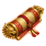
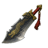
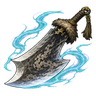
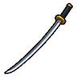
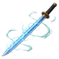
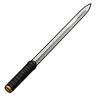
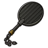
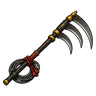
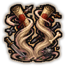

Home › Your ninja › Rare arts and legendary blades
Rare arts and legendary blades
The most famous techniques and swords can't be bought, crafted or inherited: they have to be found.
Hiraishin, Edo Tensei, Rasengan, Chidori, Shadow Clone, Unlock Potential and the toad, snake and slug summoning contracts are learned only from very rare forbidden scrolls, about one or two a game-year. The named legendary weapons exist once per world and are found, never forged or bought. The six Shichiken swords are carried by sworn swordsmen of six villages and have to be won.
The rare arts
| Art | What the scroll does |
|---|---|
 Hiraishin (Flying Thunder God) | Opens the Hiraishin tree and teaches Seal Touch |
| Edo Tensei (Impure World Reincarnation) | Opens the Edo Tensei tree and teaches Edo Tensei |
| Rasengan | Teaches the Rasengan; its variants (Rasenshuriken, Rasenfire and others) follow |
| Chidori | Teaches the Chidori (Lightning Blade); its variants follow. Needs lightning nature |
| Shadow Clone | Teaches Shadow Clone and opens the Shadow Clone tree (the element shadow clones and the other clone arts) |
| Toad contract | Gamakichi first; bigger toads, the reverse summoning and Toad Sage Mode follow |
| Snake contract | A cobra first; the great snake, the reverse summoning and Snake Sage Mode follow |
| Slug contract | The slug summon |
| Unlock Potential (Senzai Kaihō) | Teaches it: S-rank, 60 seconds of +8 to every IMPACT-L letter, +8 saves and +8 movements; afterwards the Spring Time of Youth is spent (fatigued until rest) |
After the scroll, the rest of the art is learned with Training Points, as usual. Without the scroll, points can't buy it, and nothing else teaches it: no gene, no random technique scroll, no master, no scribe (a rare art can't be written down). The scroll is used up after reading.
Where the scrolls come from
- Landmarks: scroll caches (40%), sealed temples (30%) and clan laboratories (20%) may hold one.
- Missions: an S-rank mission's bonus (15%) or an A-rank one (5%).
- The Bingo Book: a hunted target carries one a quarter of the time.
- The village archive request permit (8% on top of its scroll). See Diplomacy.
Which art a scroll holds is random. Edo Tensei is the rarest: about one scroll in twelve. Expect one or two a game-year. A scroll sells for a lot, if you'd rather trade it.
World of Naruto's traders no longer stock the Rasengan, Flying Raijin, Shadow Clone or summoning scrolls, and the old genes that taught them are gone.
The legendary blades
Seven named weapons exist once per world. They can't be forged or bought; they are only found.

Ryūgeki, the dragon cleaver: a sword-halberd of enormous size. Every blow burns and can hurl the target back.
Kibaō, the fang king blade: its wind cuts deep and draws chakra out of the foe.
Hoshigiri, the star cutter: a sword of impossible length that cuts through armour as if it were not there.
Fūraimaru, the wind-thunder sword: wind and lightning; its strikes can leave a foe shaking.
Kusanagi, the grass-cutter: a straight sword that stretches out along a line and slips through armour. Its Chidori Current needs Raiton (a lightning nature or a Raiton technique).
The Uchiha war fan: a heavy fan that turns shots and techniques back on whoever sent them, and sends a wave of fire.
The three-bladed scythe: a priest of Jashin's weapon. Its Jashin Ritual only answers a follower of Jashin (see Ideology).
They turn up on old battlefields (30%), in sealed temples (25%), in clan laboratories (10%), and in the hands of a Bingo Book target (10%), always of legendary quality. Once a blade has appeared, it never appears again in that world.
Other legendary forgings (the clockwork and dhampir blades) can still be made, after Legendary forging research.
Every legendary weapon opens its own technique tree the first time someone holds it: two training steps and the weapon's techniques, which need it in hand.
The Shichiken (The Seven Blades)
Six legendary swords belong to six villages. Each village has one sworn swordsman (a chūnin or jōnin) who carries his sword and knows all its techniques. He may join his village's raids (about one in four) or defend his village when you attack it.
| Sword | Village | Techniques |
|---|---|---|
| Kubikiribōchō, the executioner's blade | Nagisagakure | Blood Regrowth (every hit that draws blood mends the blade), Beheading Swing (a wide arc, twice as hard against a downed or bleeding foe), Silent Cleave (twice as hard from hiding or a mist) |
| Hiramekarei, the twin-hilted blade | Kaedegakure | Store (keeps chakra in the blade), Hammer (a giant chakra hammer, knockback), Long Blade (a long cut along a line); a full store makes the next one half again as hard |
| Kiba, the fang blades | Sajingakure | Lightning Edge (hits can stun), Lightning Burial (a bolt from the sky), Lightning Roar (a lightning dash) |
| Nuibari, the sewing needle | Otowagakure | Skewer (a thrust through a line that stitches everyone it hits), Reel In (drags every stitched foe to you), Stitch (pins one foe for 6 seconds) |
| Shibuki, the blast sword | Haigakure | Blast Slash (1 explosive tag), Chain Blast (three blasts, 3 tags), Reload (refills the 10 tags from the paper bombs you carry) |
| Kabutowari, the helm splitter | Tetsugakure | Helm Split (ignores armour, breaks shield belts and barriers, triple damage to walls), Chain Throw (pulls one foe in), Hammer Blow (knockback and stun) |
When a swordsman dies in the living world (old age, war), another ninja of his village inherits the sword. When he falls on your map, the sword drops and is yours to take, but his village wants it back: a hostile village sends ninja to reclaim it within a week; a village at peace with you asks for it in a letter, and its goodwill drops by 20.
The weapon-sealing scroll
A great scroll worn in the belt slot, written at a scribe desk. It holds up to 10 weapons: seal them from your hands or inventory, then Buki Kaihō (Weapon Release) rains them all on an area up to 14 cells away (15 chakra). Each weapon strikes a foe there with its own force and lands on the ground to be picked up again. While it is worn,

Sōshōryū (Twin Rising Scrolls) is 50% stronger.